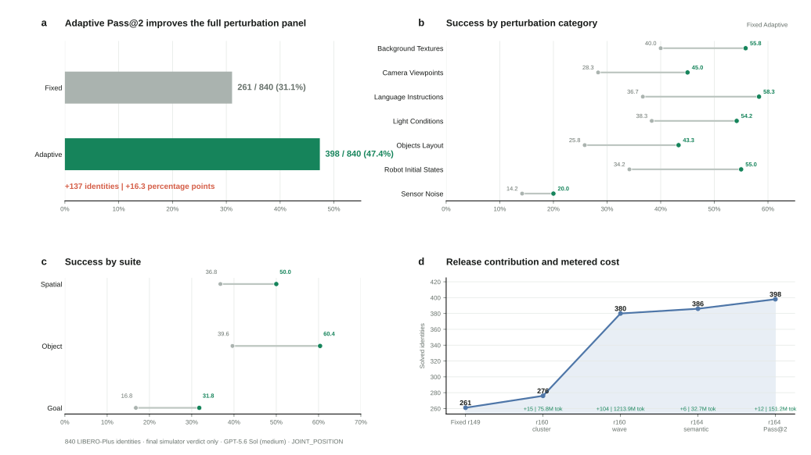

公开仿真版本 / 2026 年 8 月 24 日
roborsi：经仿真验证的机器人自进化系统
一种具身智能体框架，将经过仿真器验证的交互经验转化为可检查、可复用的代码技能。
摘要
roborsi 将智能体可见的推理过程与任务判定权限分离。Planner 制定策略，Engineer 组合基于相机观测的工具，Reviewer 分析执行轨迹。候选代码在隔离环境中评测，只有获得仿真器成功判定后才会保留。整个自适应过程因此可以通过代码检查和实验回放进行复核，并同时报告任务结果与推理成本。
LIBERO-Plus adaptive Pass@2398/840
相对固定评测的提升+16.3 pp
自适应开发覆盖率95/120
Strict Standard-130 Pass@1067/130
证据视频 / 39 秒
仿真验证的任务执行与可量化的自进化
视频以轮播九宫格展示 13 段经仿真器确认成功的任务录像。随后呈现 ACT 在同一任务、同一随机种子下的纠错微调前后对照，以及自适应覆盖率和 Code-on/off 配对效率结果。
仿真器确认的执行录像13 段成功视频当前公开的成功录像分布在两页九宫格中。
自适应覆盖率32 至 83/120跨版本开发覆盖率，并非固定策略 Pass@10。
保留代码技能+7.5 pp / -29.4%分别为配对成功率差值与总 Token 中位数降幅。
ACT 配对案例：纠错前后
在 libero_spatial_swap/0、seed 3 上，修复前的 bounded ACT 虽完成 120 步搬运，但位移不足，并在放置阶段失去夹持。加入纠错数据并微调后，ACT 完成 304 步搬运，随后通过腕部视觉校验完成放置，最终获得原生仿真器成功判定。
两段视频来自同一任务和同一随机种子。由于归档视频时长分别为 6.8 秒和 16.2 秒，页面按归一化回合进度对齐。该结果仅代表一个配对案例；32 至 83 的曲线是独立的跨版本覆盖率统计。
公开执行证据
下方汇总当前公开的 14 段录像，其中包括保留的 ACT 失败案例。每个条目均支持直接播放，并展示归档证据所能支持的最完整调用链。
三段历史 RoboTwin 视频仅保留最终任务谓词判定，原始逐调用日志未被归档；页面不会补写缺失调用。
01
系统架构与信任边界
智能体可见信息与仿真器侧的任务判定信息位于不同信任域。智能体能够读取 RGB-D 观测、已注册技能和自身执行轨迹，但无法访问任务谓词、奖励、隐藏物体位姿或成功锁存状态。
头部与腕部 RGB-D 组合
基础技能与复合技能 执行
逆运动学与关节轨迹 适应
经审查的代码覆盖层
02
基于执行轨迹的仿真证据
下方每个案例均对应一个明确任务、一个确定随机种子、一条按顺序记录的已注册工具调用链，以及仿真器终局判定。点击“调用链”可查看公开的完整执行序列。
03
LIBERO-Plus 自适应评测
评测覆盖 7 类扰动和 3 个短程任务套件，共 840 个分层扰动实例。固定评测对每个实例执行一次；自适应评测仅针对选定的失败实例，使用审核通过的代码技能更新再执行一次。成功只依据最终仿真器判定计数。

可计量自适应 Token1.474B全部有效自适应尝试
有效执行时间16.35h活跃时间区间的并集
有效自适应尝试592不含基础设施中断
未计量 VLM 调用0Planner + Engineer + Reviewer
版本贡献
每个阶段的新增成功实例均相对于 Fixed 和此前全部自适应阶段去重。
仿真器确认成功的扰动案例
04
评测协议与实验结果
各项协议分别回答不同的研究问题，结果严格按照各自的评测约束独立报告。
区分覆盖率、自适应与执行效率
Pass@k 不是进化曲线。 Strict Standard-130 从 23 增长到 67 个任务，是因为每个任务依次获得更多随机种子；累计覆盖率按定义单调递增。各轮 Token 中位数和实际耗时并不单调，剩余任务集合与执行版本也会变化。

Strict Standard-130覆盖率，不是进化随随机种子预算增加，由 23 增至 67
自适应版本任务覆盖率提高在持续演化的轮次中由 32/120 增至 83/120
Code-on/off 配对执行成本降低Token 中位数 -29.4%；实际耗时中位数 -17.0%
RoboTwin 历史开发结果
历史 RoboTwin 报告同时记录了纯 Engineer 基线与 Planner-Engineer-Reviewer 三角色框架。两者的任务级 Pass@k 分别为 9/50 和 36/50；严格单回合成功为 104/422 (24.6%)。实验窗口为 87.26 h。
纯 Engineer9/50任务覆盖率
三角色框架36/50任务级 Pass@k
严格回合104/422成功率 24.6%
并行重叠87%不代表顺序因果关系
经任务谓词确认的回合
三段归档视频及其最终任务谓词判定均为原始证据。由于逐回合工具日志未被保留，弹窗仅展示最终判定来源，不会补写调用链。
跨版本自适应覆盖率
在版本随轮次更新的十轮序列中，已解决任务数由 32 增至 83。针对剩余失败任务的后续版本又解决了 12 个任务，最终得到 95/120 的跨版本累计覆盖率。
- 顺序终点
- 83/120
- 可计量 Token
- 2.342B
- 有效执行时间
- 11.09h
95/120 是跨版本累计开发覆盖率，不是固定策略或单一版本的 Pass@10。
Strict Standard-130
130 个任务均按顺序获得最多 10 个随机种子。智能体无法访问任务检查器、动作成功锁存、隐藏位姿或策略检查点。全部 846 个已调度任务与随机种子组合均具有最终仿真器判定。
- 任务失败
- 779
- 总 Token
- 2.882B
- VLM 调用
- 43,076
趋势解释：后五轮相对前五轮的中位数显示 Token 减少 13.6%、VLM 调用减少 3.1%，但实际耗时增加 8.0%。由于版本和剩余任务集合均发生变化，这些描述性差异不能证明模型随轮次持续加速。
保留代码技能的作用
Code-on 向智能体提供已经验证并保留的 visual_pick_place 复合技能。Code-off 保持模型、基础工具、版本、任务、随机种子和预算一致，仅移除该复合技能。
- McNemar 精确检验
- p = 8.06e-5
- 任务聚类 95% CI
- +3.7 至 +11.5 pp
- 任务级 Pass@5
- 71/120 vs 58/120
效率结果来自独立的 118 任务、seed-21 配对面板，并非由 1,200 回合显著性实验推断。
ACT 纠错学习案例
01代码技能抓取基于视觉定位源物体
→02ACT 搬运304 步纠错动作
→03代码技能放置原生仿真器最终判定
这是 libero_spatial_swap/0 上一个 seed-3 配对成功案例，不用于证明留出任务性能或泛化能力。
05
相关评测背景
各系统协议不同，不能视为同一排行榜。策略检查点、观测视角、成功反馈、执行时域、任务目录和重试语义均可能不同。所有分数必须与其原始协议共同解读。
| 系统 | 评测设置 | 公开结果 | 执行约束 | 可比性 |
|---|
当前证据缺口
现有证据支持的结论
来源说明：实验与对比报告